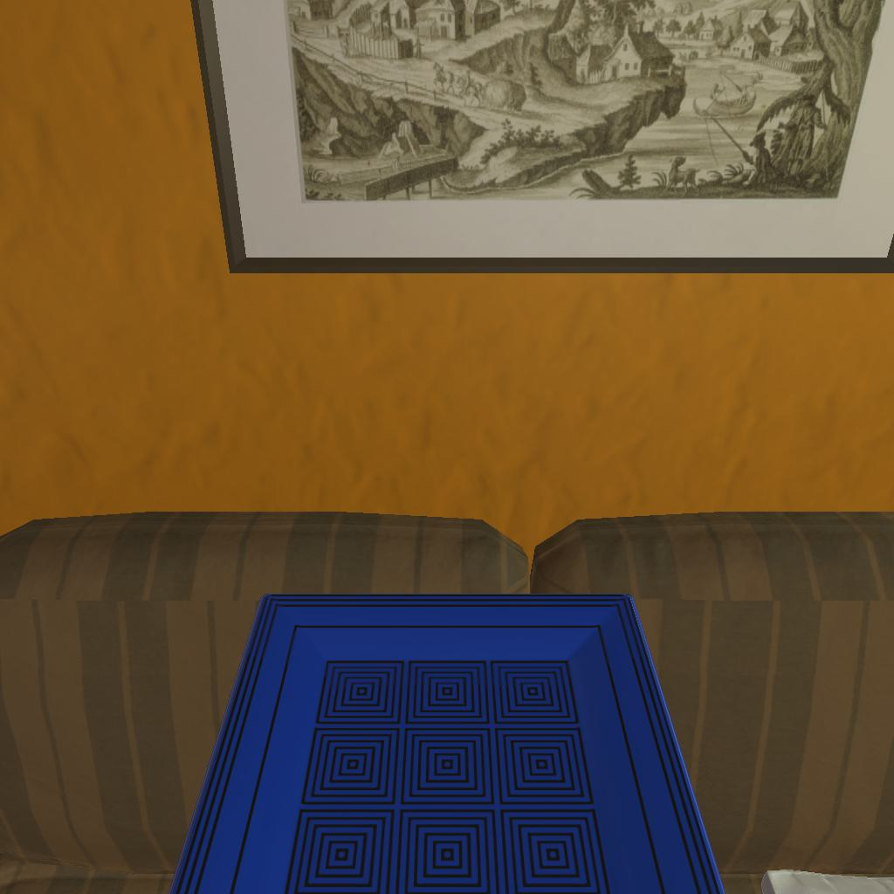
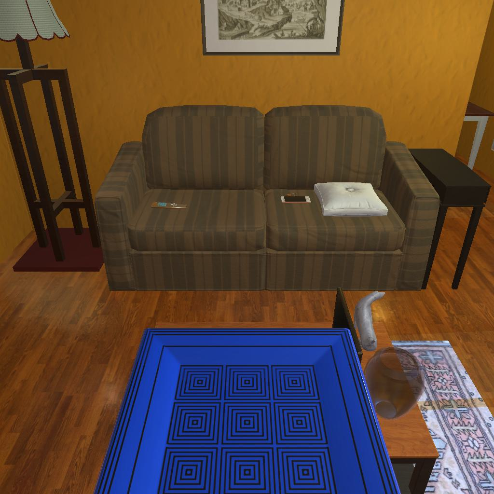

---------------------------------------------------------task: 3---------------------------------------------------------
--------------------------------------------------------------------------------------------------------------------------------------------------------------------
--------------------------------------------------------------------------------------------------------------------------------------------------------------------
Step:--------------------------------------------------------------------------8-------------------------------------------------------------------------------
----------------------------------------
VLM Prompt:
Image1:
Image2:
Image3:
**Instruction**
1. Analyze the provided images to identify all visible household objects and compare the difference between images (e.h. whether the object is opened or not and taken on hand or not), focusing on those relevant to the task description "examine the plate with the floorlamp."
2. Use the analysis of images and the task hint "The agent must find an object of the desired type, locate and turn on a light source with the desired object in-hand." to answer the question: what is the most reasonable action in the choices for the task description "examine the plate with the floorlamp"?
3. Decide and write the answer using the template: The answer is: (i): , where i is the real number. If there is no desired object in images, search every place based on **Initial Observation** to find the object. And if no one is exactly correct, choose a similar answer.
**Initial Observation**
You are in the middle of a room. Looking quickly around you, you can see armchair (1), garbagecan (1), tvstand (1), shelf (1-5), sofa (1), coffeetable (1), sidetable (1-2), drawer (1)
**Answer Choices**
(1): go to armchair 1
(2): go to garbagecan 1
(3): go to tvstand 1
(4): go to shelf 1
(5): go to shelf 2
(6): go to sofa 1
(7): go to sidetable 1
(8): go to sidetable 2
(9): go to drawer 1
(10): go to shelf 3
(11): go to shelf 4
(12): go to shelf 5
(13): put plate 1 in/on coffeetable 1
(14): use floorlamp 1
(15): examine coffeetable 1
**Answer**
Let's think step by step by following the instructions.
----------------------------------------
----------------------------------------
Original Response:
Initial analysis of the images shows:
Image 1 & Image 2:
- Both images are almost identical with no noticeable difference. The focus is on the blue plate (probably the desired object for the task) on the sofa and the floorlamp is not visible in these images.
Image 3:
- Shows a wider view of the room where we can see the sofa with the blue plate on it and a floorlamp to the left side of the image.
Based on the task description "examine the plate with the floorlamp," and the hint provided, the most reasonable action would be to first retrieve the plate and then turn on the floorlamp to examine the plate properly.
From the initial observation, we know that the agent is in the middle of the room and can see various objects. The blue plate is visible on the sofa, and the floorlamp is visible to the left of the sofa.
The answer is: (6): go to sofa 1 to retrieve the plate, and then (14): use floorlamp 1 to turn it on for examination. However, since we can only select one action as the most reasonable next step and considering the hint about having the desired object in-hand before locating and turning on the light source, the priority would be to first take the plate.
The answer is: (6): go to sofa 1.
----------------------------------------
----------------------------------------
>>> Refine Original VLM Response and Get Pure Action: go to sofa 1 to retrieve the plate, and then (14): use floorlamp 1 to turn it on for examination
----------------------------------------
-----------------------------------------------------------------
Running time: 12.367683172225952 seconds
Total Money: 1.1499400000000002
-----------------------------------------------------------------
-----------------------------------------------------------------
Text Observation:Nothing happens.
-----------------------------------------------------------------
UNSUCCEED